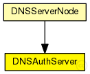
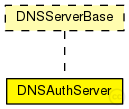

This documentation is released under the Creative Commons license
This documentation is released under the Creative Commons licenseTODO auto-generated module
The following diagram shows usage relationships between types. Unresolved types are missing from the diagram. Click here to see the full picture.
The following diagram shows inheritance relationships for this type. Unresolved types are missing from the diagram. Click here to see the full picture.
| Name | Type | Description |
|---|---|---|
| DNSServerNode | compound module | (no description) |
| Name | Type | Default value | Description |
|---|---|---|---|
| recursion_available | int | 1 | |
| root_servers | string | "" | |
| master_file | string | "" |
| Name | Direction | Size | Description |
|---|---|---|---|
| udpIn | input | ||
| udpOut | output |
// // TODO auto-generated module // simple DNSAuthServer like DNSServerBase { parameters: int recursion_available = default(1); string root_servers = default(""); string master_file = default(""); gates: input udpIn @labels(UDPControlInfo/down); output udpOut @labels(UDPControlInfo/down); }
This documentation is released under the Creative Commons license